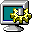

Tap an icon on the left to open it here.
My Bio Desktop
start
00:00
Refresh

Personalize...
Copy
Display Properties
×
Themes
Advanced
Theme:
Luna (Windows XP)
Saya
Natsuki
Sora
Choose a color scheme. Click Apply to preview it, or OK to apply and close.
Desktop Wallpaper
Taskbar Underlay Image (frosted glass)
Start Button Icon
Custom Cursor Image
Taskbar Color
Title Bar Color
Window Border Color
Start Button Color
Time Block Color
App Text Color
Reset custom overrides
Custom overrides layer on top of whichever theme is selected, and persist across reloads until reset.
Apply
OK
Cancel